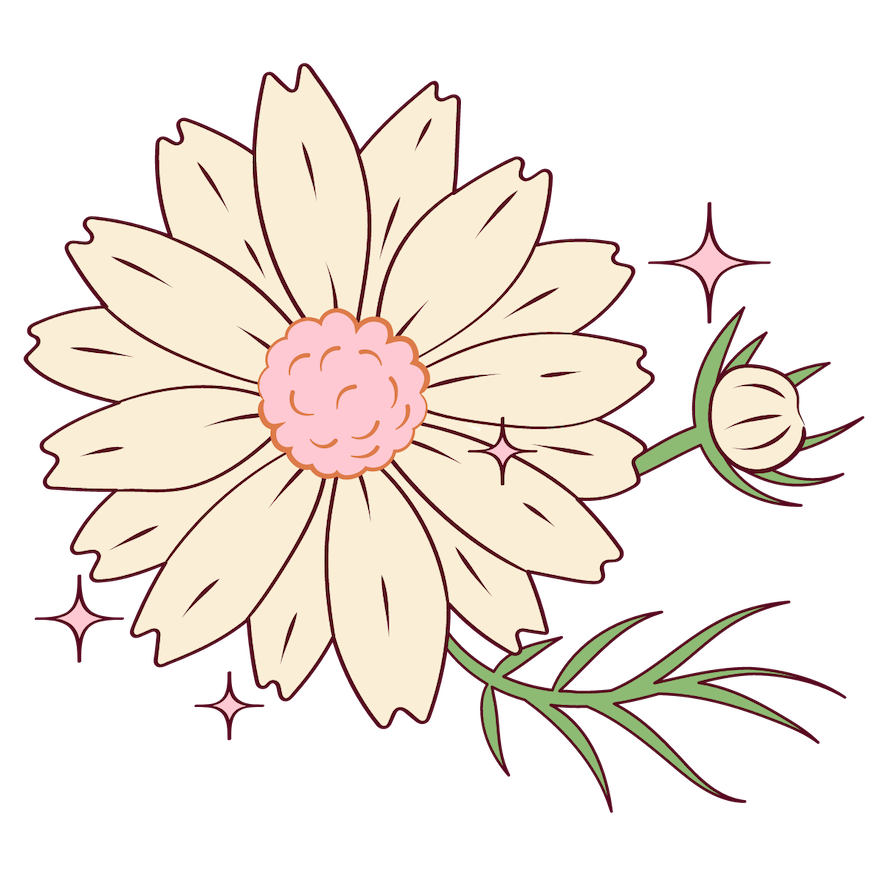
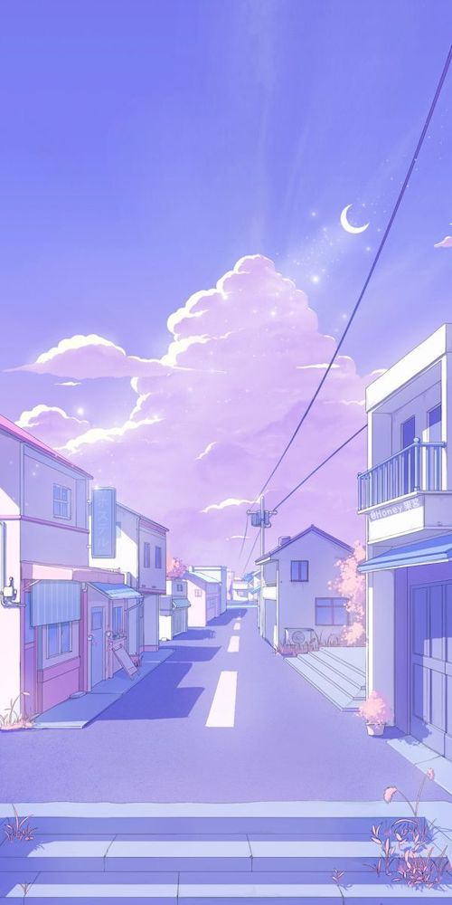
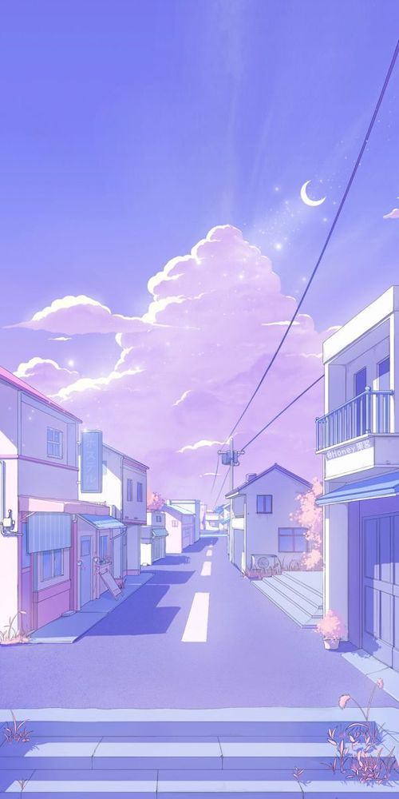

Hey, there!
Nice to meet you, I'm Jessica. I made this site in hopes of de-mystifying certain aspects of UX design portfolios so that you feel inspired and capable of creating your own.
On this site, you'll find some useful information, helpful online resources, and a few inspiration UX portfolios. First, we'll establish some essential components of every UX design portfolio (in my humble opinion).

Three Key Components of an Excellent UX Portfolio
1. Personality
Recruiters look at dozens of design portfolios a day, and what better way to make yours stand out than to make it unique to you! While there are plenty of templates for any web-hosting program you may decide to use, it pays off to really make your portfolio custom-built to your liking, without getting too complex.

2. Work
Obviously something that recruiters are looking for are your selected works. The keyword here is "selected".
Design recruiters are busy people, and don't have time to look every project of everyone that applies. They don't want to spend too much time on a portfolio, so it's best to give them your best work in the most concise format.
It's also important to choose projects that you can talk at length about. Projects that you find particularly interesting would be a great example. Your interest will help demonstrate your passion for design when speaking about the projects.


3. Thinking Process
Another important aspect of your design portfolio is your thinking process.
For each project, you should have a detailed summary of things such as your involvement, planning, decision-making, and what you've learned from the experience.
Again, choose your most interesting projects so you'll have plenty to talk about.
Bonus! Aesthetic Image Gallery

 
